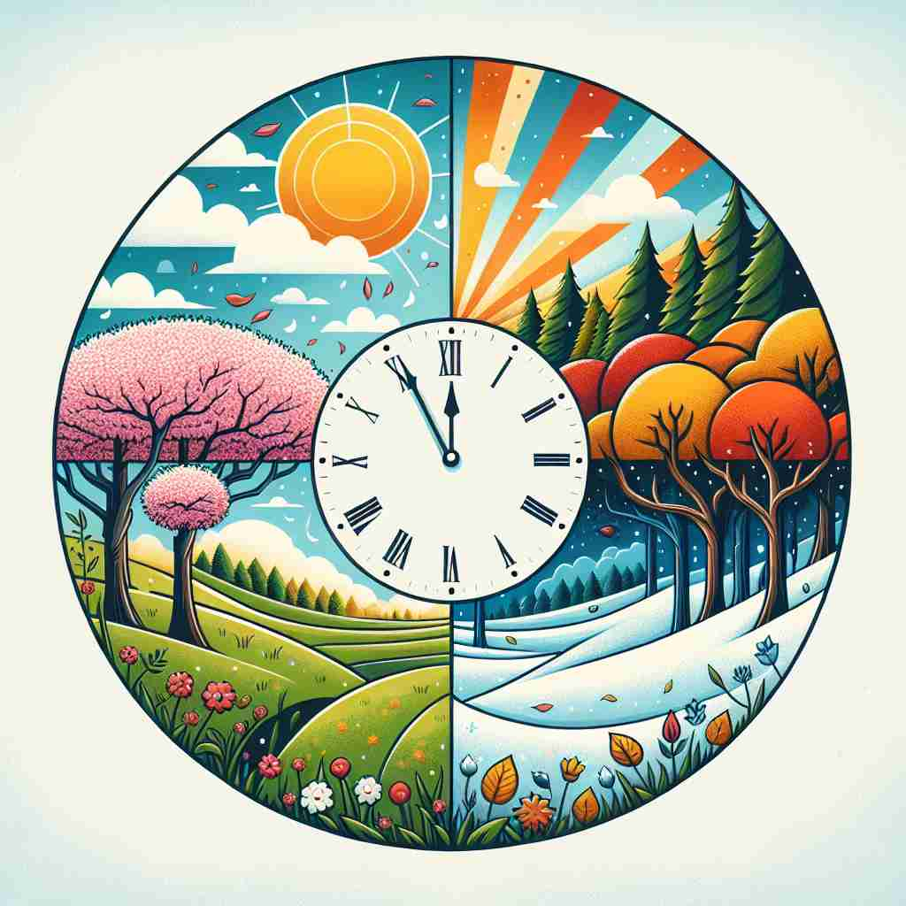

💬 We gather to celebrate the new year with fireworks and joy.

💬 The students are excited about the next school year.
💬 In the year 2023, many events will take place.

💬 This picture shows one year of seasons in a beautiful way.
🔈 [jɪə][jɜː]
🗝️ n. a period of 12 months, especially from January to December
🖼️ 在一个繁忙的办公室里，工作人员们正在为即将到来的新年派对装饰。他们聊着过去的一年，从一月的挑战到十二月的成果，体现了'year'作为12个月时段的意义。
🔍 想象'year'是一个圆圈，代表地球绕太阳一周的时间。这个基本概念延伸到日历年、财政年度、学年等。无论是时间段、特定期间还是群体，都源于这个基本的循环概念。记住这个循环意象，可以帮助你联想'year'的各种用法。
💬 We gather to celebrate the new year with fireworks and joy.
💬 The students are excited about the next school year.
💬 In the year 2023, many events will take place.
💬 This picture shows one year of seasons in a beautiful way.
🌳 这是一个基础词汇，没有词根、前缀或后缀的复合结构。'year' 主要表示时间单位 '年'。
💡 可以用生肖年（例如鼠年、牛年）和现实生活中纪年的应用来记忆，每年的习俗或节日帮助加深对 'year' 的理解。
🗝️ n. a period of about 365 days, as measured by Earth's revolution around the Sun
🖼️ 在科学课上，教师正在解释地球绕太阳一周所需的时间。他在黑板上画出地球的轨道，并指出地球一年大约有365天，这展示了'year'作为地球公转周期的意义。
💬 It takes approximately one year for Earth to orbit the Sun.
❓ 基于天文学观测的时间单位
🗝️ n. a specific 12-month period used for a particular purpose
🖼️ 在一场企业会议中，经理们正在审阅上一财政年的财务报告。他们讨论这一整年中各项指标的变动，展现了'year'作为特定用途的12个月时间段的意义。
💬 The company's fiscal year ends in March.
❓ 将核心含义应用于特定领域
🗝️ n. a period of time characterized by a particular quality or activity
🖼️ 在一个音乐交流会上，主持人回顾了‘摇滚乐年’，其中人们耳熟能详的摇滚乐队悉数亮相，整个年代充满激情与活力，展现了'year'作为特定活动或特征时期的意义。
💬 2020 was a year of great challenges for many people.
❓ 将一年时间概念扩展到特定状态或活动
🗝️ n. age or level in school or college
🖼️ 校园里的公告栏上贴着一张大海报，欢迎新学年一年级新生到校。学生们兴奋地进入教室，开始他们学术生涯的新阶段，标示出'year'作为年级的意义。
💬 She's in her second year of university.
❓ 用年度概念表示教育阶段
🗝️ n. a set of students in the same academic year
🖼️ 在大学校园的广场上，毕业班的摄影师正在为大四学生集体合影。他们穿着毕业礼服，满载期待与不舍，展示了'year'作为同一年级学生群体的意义。
💬 Our year is organizing a reunion next month.
❓ 用年度概念指代同一学年的学生群体